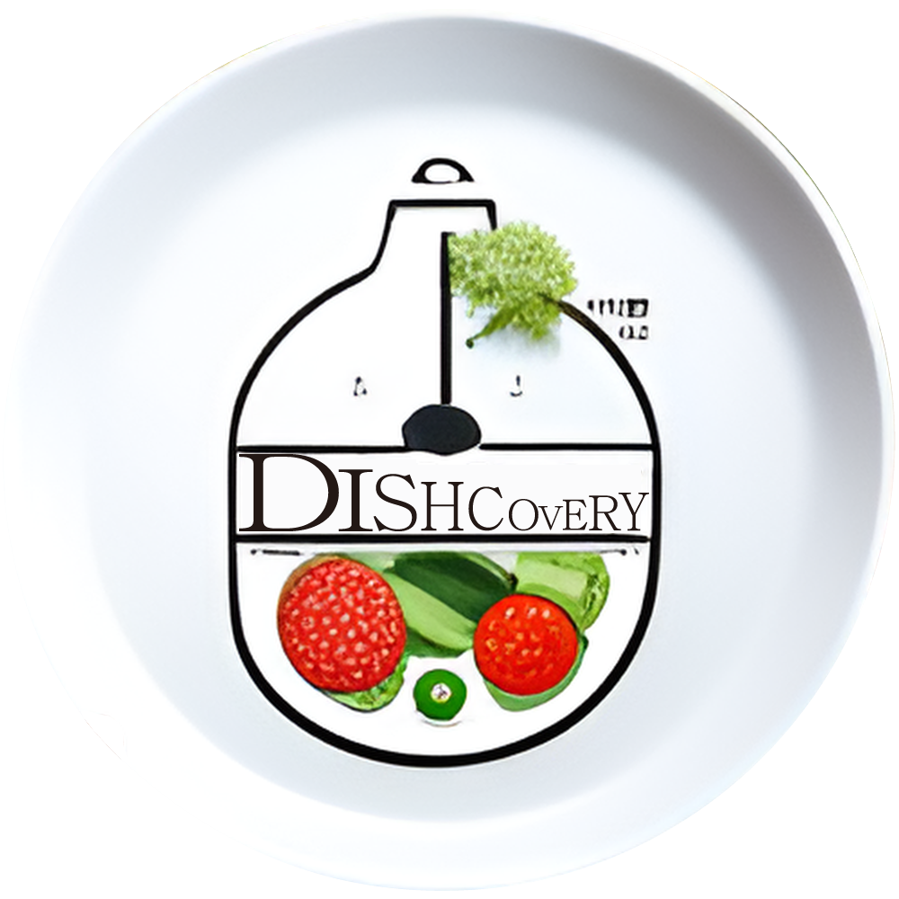

{% load static %}
<!DOCTYPE html>
<html lang="en">
  <head>
    <script src="https://ajax.googleapis.com/ajax/libs/jquery/3.5.1/jquery.min.js"></script>
    <meta charset="UTF-8" />
    <meta http-equiv="X-UA-Compatible" content="IE=edge" />
    <meta name="viewport" content="width=device-width, initial-scale=1.0" />
    <link rel="stylesheet" href="./style.css" />
    <title>Dishcovery</title>
  </head>

  <body>
    <header>
      <div class="title-container">
        <h1 id="titleH1">Dishcovery</h1>

        
      </div>

      <div class="search">
        <input
          type="text"
          id="searchInput"
          placeholder="Enter an ingredient..."
        />
        <button id="searchButton">Search</button>
        <script src="./searchbutton.js"></script>
      </div>
    </header>
    <span>Top searches: chicken, soup, ratatouille, pasta</span>
    <!-- 임시 -->
    <div id="mealList" class="meal-list">
      <!-- search하면 api를 받아오는 동시에 받아오는 양껏 데이터 이미지들 리스트에 뿌리기-->
    </div>

    <div class="modal-container">
      <button id="recipeCloseBtn" class="close-button">&times;</button>
      <div class="meal-details-content">
        ...<!-- Content from js will be inserted here -->
      </div>
    </div>
  </body>
</html>
